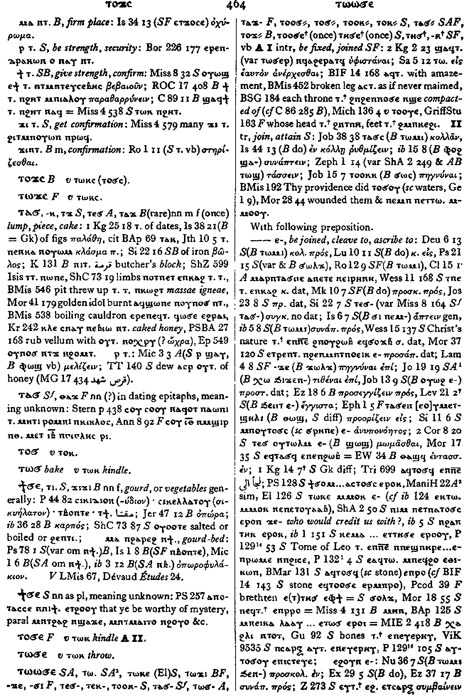

ϫⲓϫⲓ
(
ⲧ
)
(
noun female
)
Crum:
464a
gourd,
or
vegetables
generally
[
οπωρα
,
καρποσ
]
1698-1-1
1698-2-1
(S)
ϯϭⲉ
,
ⲧⲓϭⲉ
(B)
ϫⲓϫⲓ
ⲙⲁ
ⲛϩⲁⲣⲉϩ
ⲛϯ
.
gourd-bed
[
οπωροφυλακιον
]
Crum:
464a

464
Dawoud:
751b,840b
751
840
Home
prev
Key:
1698
next
Contact